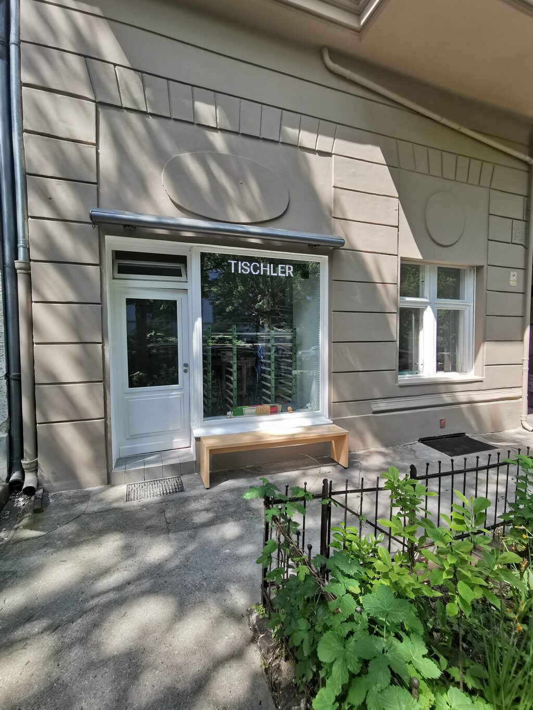

MICHALAK®
[01] GUTES HANDWERK. GUTE MÖBEL.
Für Räume.
Für Menschen.
Nach Maß.
Wir bauen Möbel, die zu Ihrem Leben passen. Individuell geplant, in Berlin gefertigt — bis ins letzte Detail.
Unsere Arbeiten entdeckenHANDWERK
SEIT 1995
[02] AUSGEWÄHLTE ARBEITEN
Jeder Raum.
Eine eigene Lösung.
Von der ersten Idee bis zur Montage.
KI-Visualisierungen unserer Arbeiten.
[03] WAS WIR FÜR SIE TUN
Von der Idee
zum Lieblingsstück.
Einzelstück oder Serie, neue Möbel oder neue Oberflächen. Wir planen mit Ihnen und fertigen für Sie.
01Möbel nach Maß+
Einbauschränke, Regale, Tische, Bänke und Hochbetten. Individuelle Lösungen für Ihr Zuhause und Ihr Büro.
02Küchen & Fronten+
Neue Küchen nach Ihren Vorstellungen. Oder neue Fronten für Ihre bestehende Küche — die Schränke bleiben erhalten.
03Lackierung & Aufarbeitung+
Handlackierte Möbel in Ihrer Wunschfarbe, transparent lackierte Massivholzmöbel und die Aufarbeitung Ihrer Lieblingsstücke.
04Planung & Beratung+
Bemusterung im Tischlerladen oder Beratung bei Ihnen vor Ort. Materialien zum Anfassen und Planung für Ihren Raum.

GELIEUSTRASSE 9A · BERLIN[04] UNSERE WERKSTATT
Berliner Handwerk.
Seit 1995.
Wir sind gelernte Tischler und Lackierer. Seit 1995 entstehen bei uns Möbel für die Menschen und Räume dieser Stadt.
Persönliche Beratung, Materialien zum Anfassen und Lösungen, die wirklich passen. Besuchen Sie uns im Tischlerladen in Steglitz-Lichterfelde — nach telefonischer Terminvereinbarung.
[05] LASSEN SIE UNS ANFANGEN
Ihr Raum.
Unsere nächste Aufgabe.
Eine Idee, eine Skizze oder einfach eine Frage?
Wir freuen uns auf Ihr Projekt.
Gelieustraße 9A
12203 Berlin–Lichterfelde
Besuche nach Terminvereinbarung.
Consultations also available in English.